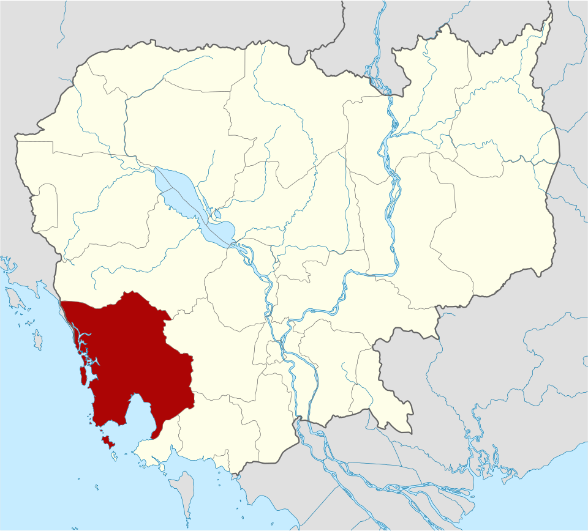
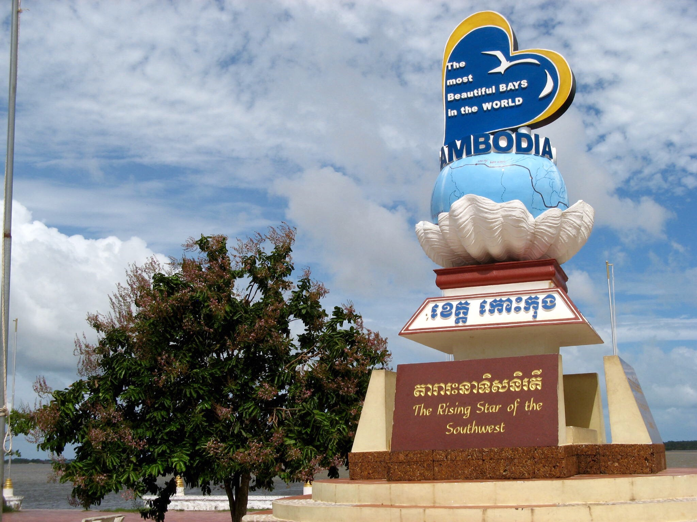
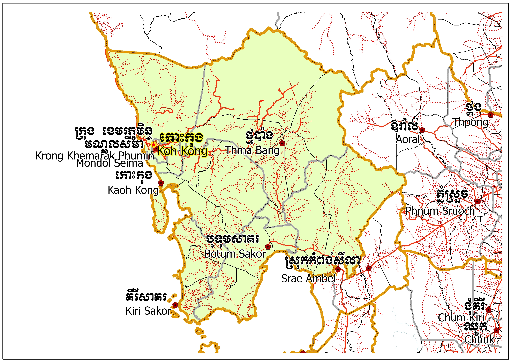
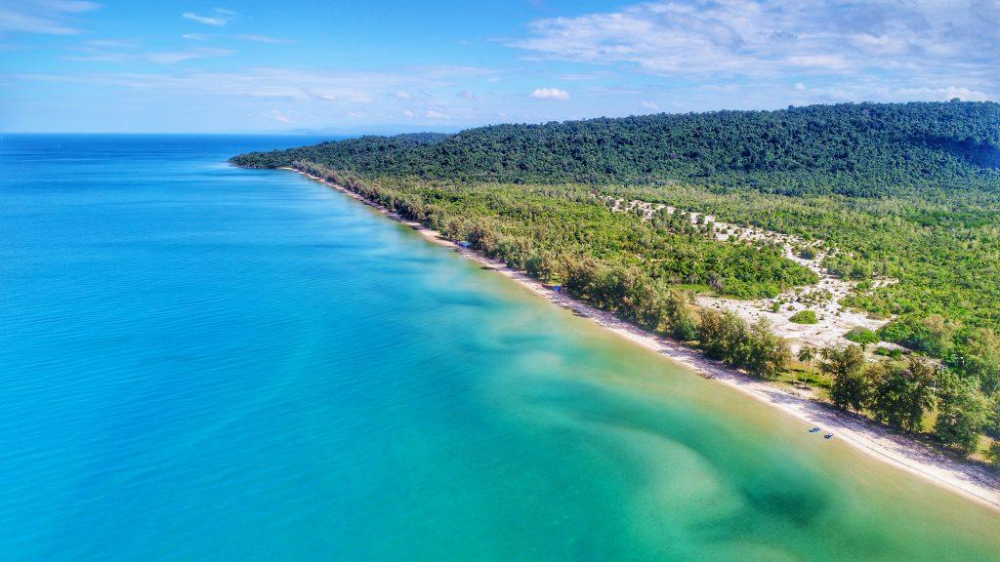
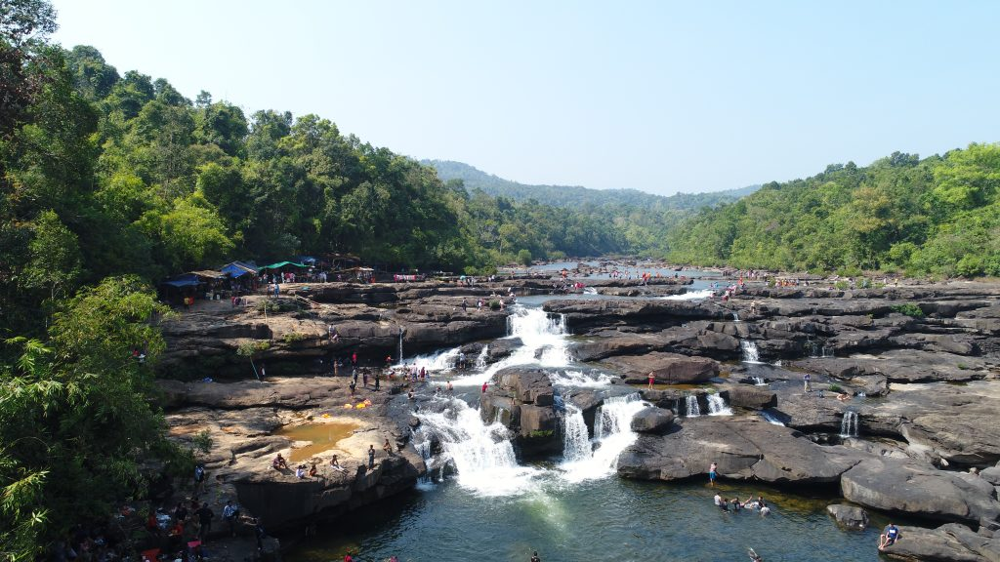
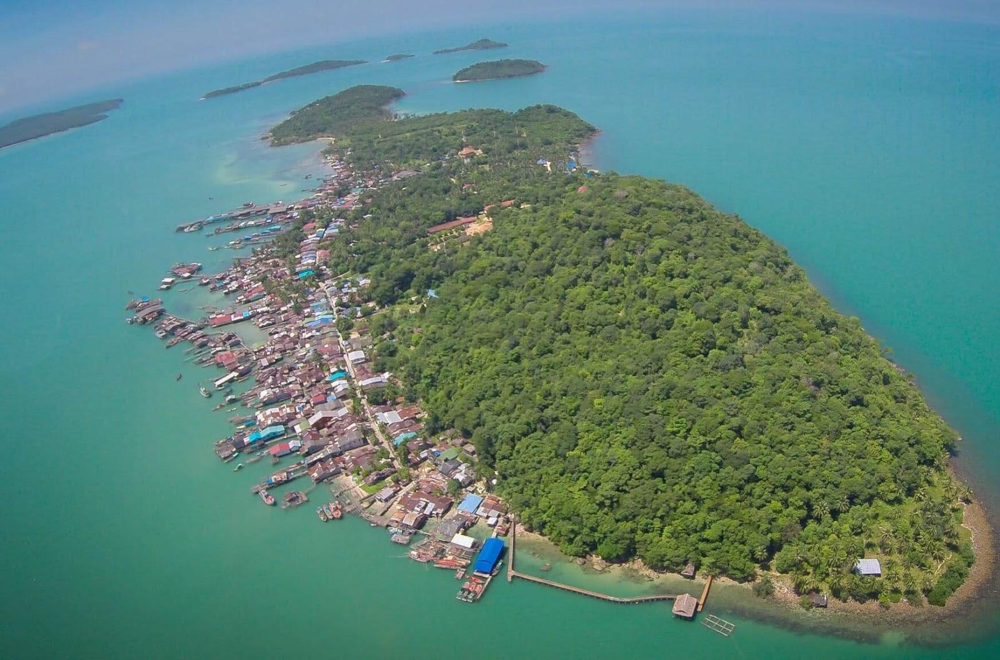

Koh Kong
← ត្រឡប់ទៅផែនទីកោះកុង គឺជាខេត្តមួយស្ថិតនៅភាគនិរតីនៃប្រទេសកម្ពុជា។ ទីរួមខេត្តគឺក្រុងខេមរភូមិន្ទ។ខេត្តនេះដែលមានក្រុងខេមរភូមិន្ទជាទីរួម ខេត្តស្ថិតនៅភាគនិរតីនៃប្រទេសកម្ពុជា។ ខេត្តកោះកុងមានព្រំប្រទល់ ខាងជើងជាប់នឹងខេត្តពោធិ៍សាត់ ខាងកើតជាប់នឹងខេត្តកំពង់ស្ពឺ កំពត និង ព្រះសីហនុ ខាងត្បូងនិងខាងលិចជាប់នឹងឈូងសមុទ្រថៃ និងមួយផែ្នកនៃចង្វាតត្រាច(ខេត្តត្រាច)ប្រទេសថៃ។បន្ទាប់ពីការរំដោះពីរបបខ្មែរក្រហមនៅឆ្នាំ ១៩៧៩ កោះកុងនៅតែមិនទាន់មានប្រជាជនច្រើននៅឡើយ។ ក្រោយមកគោលនយោបាយរដ្ឋាភិបាលថ្នាក់ជាតិបានជម្រុញលើកទឹកចិត្តឱ្យប្រជាជនមករស់នៅកោះកុង ក៏ធ្វើឱ្យមានលំហូរចូលមនុស្សយ៉ាងគំហុក។ វាត្រូវបានគេប៉ាន់ប្រមាណថា អត្រាកំណើនប្រចាំឆ្នាំជាមធ្យមនៅកោះកុងគឺ ១៦ ភាគរយ ដែលបានគំរាមកំហែងដល់ធនធានព្រៃកោងកាងនៅក្នុងខេត្តនេះ។ ទីប្រជុំជនរបស់ខេត្តកោះកុងបានរីកចម្រើនយ៉ាងលឿនជាអន្លើៗដើម្បីឆ្លើយតបទៅនឹងសំពាធខាងទីផ្សារពីប្រទេសថៃ និងដោយសារការបំលាស់ទីចូលមកខេត្តពីប៉ែកផ្សេងៗនៃកម្ពុជា។

ខេត្តនៅចុងនិរតីបំផុតនៃប្រទេសកម្ពុជា គឺកោះកុងមានខ្សែឆ្នេរសមុទ្រដ៏វែងដែលមិនទាន់បានអភិវឌ្ឍ និង ទីខាងក្នុងព្រៃ ភ្នំ ដែលមិនអាចចូលទៅដល់ដ៏ធំល្វឹងល្វើយហ៊ុំព័ទ្ធដោយផ្នែកនៃជួរភ្នំក្រវាញ ឧទ្យានជាតិដ៏ធំបំផុតរបស់កម្ពុជា គឺឧទ្យានជាតិបទុមសាគរ និងក៏ជាផ្នែកមួយនៃឧទ្យានជាតិគីរីរម្យ។ អ្វីដែលជាភាពទាក់ទាញទេសចរណ៍របស់ខេត្តនេះរួមមានបនល្បែង និង ទឹកធ្លាក់ ខណៈនោះដែរតំបន់នេះក៏ជាតំបន់នាំចេញ ហើយសុខូបត្ថម្ភវត្ថុកំពង់ផែថ្មីៗត្រូវបានគេអភិវឌ្ឍឡើងដើម្បីធ្វើពាណិជ្ជកម្ម។ ខេត្តនេះគឺជាច្រកចេញយ៉ាងពេញនិយមមួយមកកម្ពុជាពីហាតលេកនៅក្នុងប្រទេសថៃភាគខាងកើត ដោយឡែកដោយសារតែហេតុផល វាជាច្រកចូលដោយផ្ទាល់ទៅកាន់កំពង់ផែ និង រមណីយដ្ឋានឆ្នេរ នៃក្រុងព្រះសីហនុ។ ព្រំប្រទល់នេះស្ថិតនៅចាំយាម ប្រហែល១៤ គម ពីក្រុងខេមរភូមិន្ទ។ ការធ្វើដំណើរទៅកោះកុងជាការធ្វើដំណើរដ៏សប្បាយរីករាយ ដែលស្ពានមួយចំនួនត្រូវបានគេកសាងឡើង ដំណាក់កាលទីមួយនៅឆ្នាំ២០០២។ ភូមិសញ្ញានៃខេត្តកោះកុងអាចបានបង្កើតឡើងដោយសម្ព័ន្ធល.យ.ផ. ស្ពានដែលមិនធ្លាប់មានសាងសង់វែងបំផុតនៅកម្ពុជា ដែលលោកអ្នក នឹងឆ្លងកាត់មានប្រវែង ១ ៩០០ មាត្រ កាត់សមុទ្រភ្ជាប់ក្រុងខេមរភូមិន្ទទៅនឹងរមណីយដ្ឋានកោះកុង និង ទីត្រួតពិនិត្យអន្តរជាតិ។ នៅឆ្នាំ ២០០៧ ផ្លូវជួសជុលថ្មីមួយខ្សែ (ផ្លូវជាតិលេខ៤៨) ត្រូវបានបញ្ចប់បង្ហើយពីទីប្រជុំជនកោះកុងទៅកាន់ស្រែអំបិល តាមបណ្ដោយផ្លូវជាតិពីភ្នំពេញទៅព្រះសីហនុ រួមមានច្រកឆ្លងកាត់ទន្លេ ៤ នៅសល់ដែលស្ពានមួយចំនួនត្រូវបានបើកសម្ពោធនៅខែ ឧសភា ២០០៨ ដែលគឺជាអំណោយរបស់រដ្ឋាភិបាលថៃផ្ដល់មកឱ្យកម្ពុជា


ខេត្តនេះត្រូវបានបែងចែកទៅជា ៦ស្រុក និង ក្រុងមួយ។
កោះកុងក្រៅ គឺជាដែនកោះធម្មជាតិដ៏ធំជាងគេបង្អស់នៅកម្ពុជា ដែលស្ថិតនៅក្នុងឃុំជ្រោយប្រស់ ស្រុកកោះកុង ខេត្តកោះកុង។ មានចម្ងាយប្រមាណ ៣០ គីឡូម៉ែត្រពីក្រុងខេមរភូមិន្ទ (ចំណាយពេលជិះទូកប្រហែល ៥០នាទី) កោះនេះសម្បូរទៅដោយព្រៃស្រោង ទឹកធ្លាក់ ផ្កាថ្ម និងឆ្នេរខ្សាច់សស្អាតៗចំនួន ៦ ទៅ ៧ កន្លែង។
កោះកុងក្រៅមានផ្ទៃដីប្រមាណជាង ១០៣ គីឡូម៉ែត្រការ៉េ និងជាកោះខ្ពស់ជាងគេក្នុងតំបន់ឈូងសមុទ្រថៃ។ ភាពលេចធ្លោនៃកោះនេះគឺ ភាពនៅព្រហ្មចារីនៃធម្មជាតិ ដែលមានព្រៃឈើខៀវស្រងាត់ បឹងទឹកសាប ទឹកធ្លាក់ និងឆ្នេរខ្សាច់វែងៗជាច្រើន ដូចជាឆ្នេរចម្ការដូងជាដើម។ក្នុងចំណោមឆ្នេរទាំង ៦ ទៅ ៧ នោះ ឆ្នេរទី៣ និងឆ្នេរទី៤ គឺជាទីតាំងដែលពេញនិយមជាងគេសម្រាប់ភ្ញៀវទេសចរ។


ទឹកធ្លាក់តាតៃ គឺមានតំបន់ រមីយដ្ឋាន ដែលមានខ្យល់អាកាស និងទេសភាព បរិសុទ្ធ ។ នៅភូមិតាតៃ ឃុំតាតៃ ស្រុកស្មាច់មានជ័យ ខេត្តកោះកុង។ ចំងាយប្រហែល ២០ គីឡូម៉ែត ខាងកើតទីរួមខេត្ត កោះកុង តាមផ្លូវជាតិលេខ48 ។ ដែលមានប្រជាជន ប្រមាណ ៨៤ គ្រូសាររស់នៅទីនោះ ហើយពួកគេ ប្រកបមុខរបរជា អ្នកនេសាទ នឹងការប្រមាញ់។ ទឹកធ្លាក់តាតៃ ត្រូវបានស្គាល់ថា ជាទឹកធ្លាក់ តាឥសី ។
កោះ ស្តេច ស្ថិតនៅ ឈូងសមុទ្រថៃ ប្រហែល 1.5 kiloម៉ែត្រs (1 mi) នៅឆ្នេរសមុទ្រនៃ ឧទ្យានជាតិបុទុមសាគរ ក្នុងស្រុក គិរីសាគរ ក្នុង ខេត្តកោះកុង ប្រទេសកម្ពុជា ។ វាជាកម្មសិទ្ធិរបស់ប្រជុំកោះតូចមួយនៃកោះចំនួន 12 ដែលស្ថិតនៅជិតគ្នានិងដីសំខាន់។ សហគមន៍ នេសាទ រស់នៅលើកោះនេះ ដែលមានជនជាតិ ខ្មែរ ចិន ថៃ និង វៀតណាម ។ ភូមិលាតសន្ធឹងតាមត្រើយខាងកើតនៃកោះ; នៅខាងលិចមាន ផ្ទះសំណាក់ បែបខ្មែរតូច មួយ ។ នៅចុងខាងត្បូងនៃកោះនេះគឺជារមណីយដ្ឋានវិស្សមកាលដ៏ប្រណិត។ កោះស្តេចមានឆ្នេរពីរ គឺមួយទៅខាងត្បូង និងមួយបែរទៅខាងលិច។
កោះស្តេច គឺជាកោះរាជធានីនៃប្រជុំកោះស្តេច។ កោះរាងសណ្តែកលាតសន្ធឹងពីខាងជើងទៅខាងត្បូងមានប្រវែងប្រហែល 2.8 kiloម៉ែត្រs (2 mi) វាមានរាងសំប៉ែត ហើយជាទូទៅមានព្រៃឈើ។ ព្រៃធម្មជាតិត្រូវបានជំនួសដោយដើមដូង និងដំណាំព្រៃឈើសម្រាប់គោលបំណងពាណិជ្ជកម្ម។ ការតាំងទីលំនៅភាគច្រើនគឺនៅភាគខាងជើង ខណៈដែលភាគខាងត្បូងទីបីគឺស្ទើរតែមិនមានប្រជាជនរស់នៅ។ កោះខ្មោចតូច / កោះខ្មោច (កោះខ្មោច) - 500 ម៉ែត្រs (1,600 ft) ខាងកើតទៅខាងលិច និង 300 ម៉ែត្រs (980 ft) ពីខាងជើងទៅខាងត្បូង - ស្ថិតនៅប្រហែល 250 ម៉ែត្រs (820 ft) ភាគខាងលិចនៃចុងខាងត្បូងរបស់វា។
